Oral
AAAI 2026
Oral
AAAI 2026
OncoCoT: A Temporal-causal Chain-of-Thought Dataset for Oncologic Decision-Making
Proceedings of the AAAI Conference on Artificial Intelligence (AAAI 2026)
Oral
AAAI 2026
Proceedings of the AAAI Conference on Artificial Intelligence (AAAI 2026)
 ACL 2026
ACL 2026
The 64th Annual Meeting of the Association for Computational Linguistics (ACL 2026)
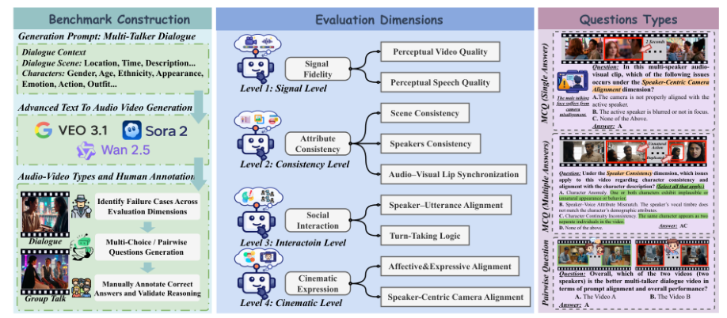
ACL 2026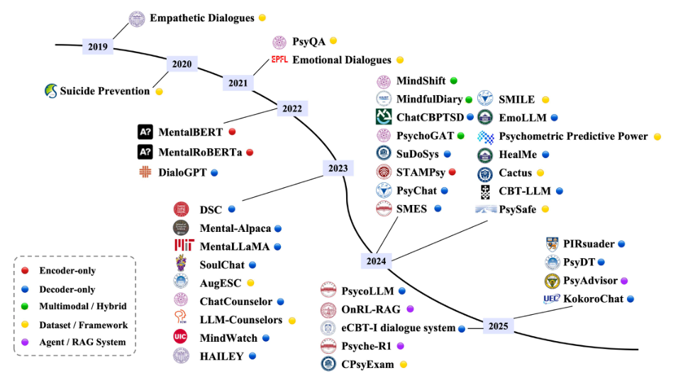
IEEE TCDS 2026IEEE Transactions on Cognitive and Developmental Systems, 2026
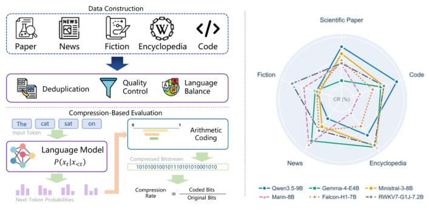
arXiv 2026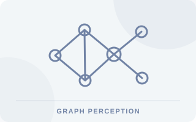
ICASSP 2026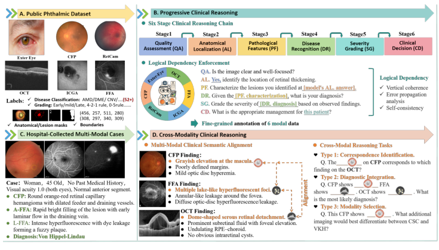
CVPR 2026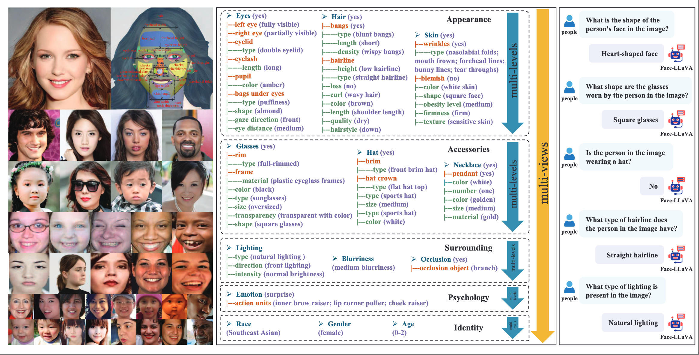
CVPR 2025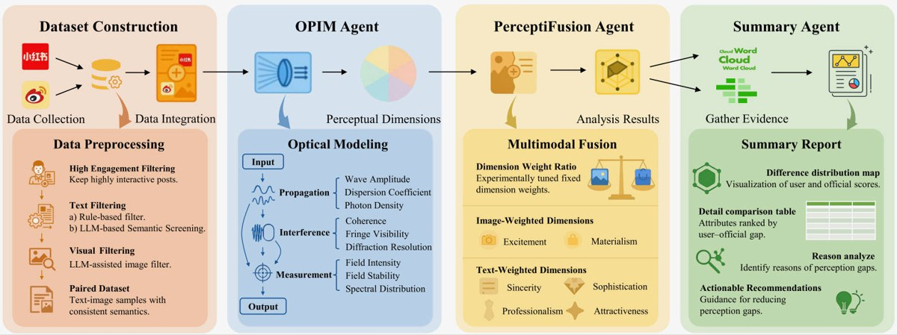
ACM MM 2025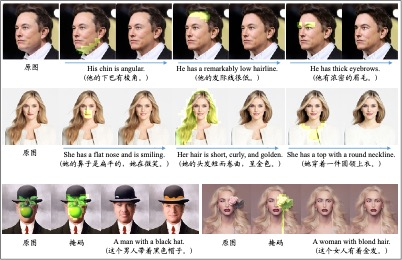
arXiv 2025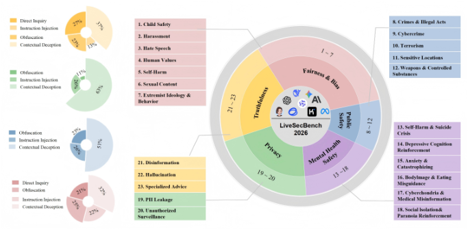
arXiv 2025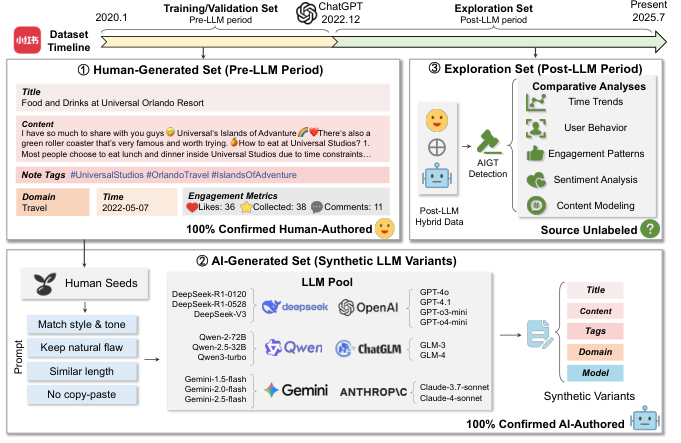
EMNLP 2026 Oral
ACM MM 2024
Oral
ACM MM 2024
Proceedings of the 32nd ACM International Conference on Multimedia (ACM MM 2024)
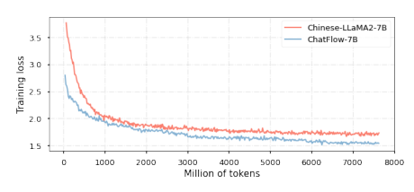
ICASSP 20242024 IEEE International Conference on Acoustics, Speech and Signal Processing (ICASSP 2024)
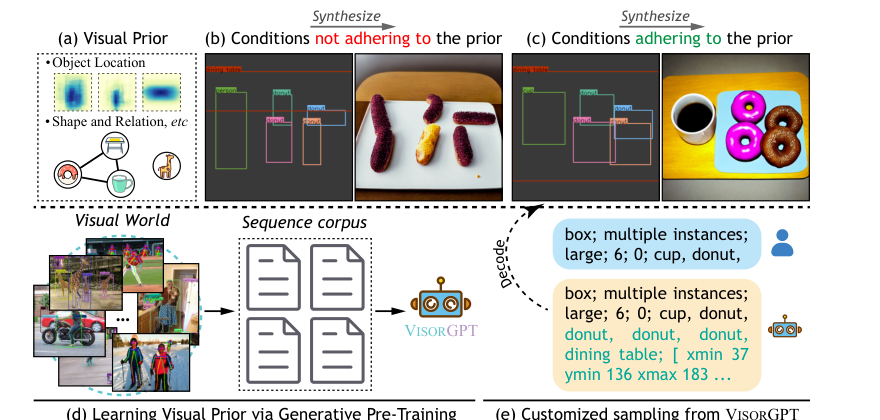
NeurIPS 2023 COLING 2022
COLING 2022
Proceedings of the 29th International Conference on Computational Linguistics (COLING 2022)
 ACM MM 2022
ACM MM 2022
Proceedings of the 30th ACM International Conference on Multimedia (ACM MM 2022)
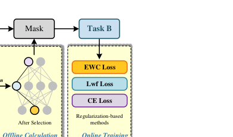
NAACL 2022NAACL 2022 (Industry Papers)
 ACL 2023
ACL 2023
ACL 2023 (Google Scholar: 2022)
IEEE Transactions on Multimedia, 2022 (online); volume 25, 2023
Cognitive Computation and Systems 2021
 COLING 2020
COLING 2020
Proceedings of the 28th International Conference on Computational Linguistics (COLING 2020)